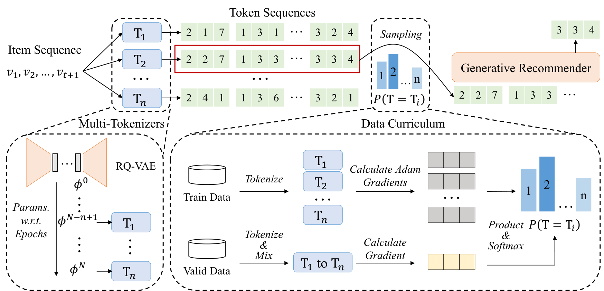

MTGRec: Pre-training Generative Recommender with Multi-Identifier Item Tokenization
Подробное саммари статьи:
Авторы: Bowen Zheng, Enze Liu, Zhongfu Chen, Zhongrui Ma, Yue Wang, Wayne Xin Zhao, Ji-Rong Wen.
Аффилиации: Renmin University of China; Huawei.
1. Коротко: о чем статья
MTGRec решает проблему one-to-one item tokenization в generative recommendation. Обычно каждому item соответствует один identifier. Это ограничивает diversity token sequence data и плохо помогает low-frequency items. Авторы предлагают использовать несколько семантически близких identifiers для одного item и превращать одну user sequence в несколько tokenized variants.
Ключевой трюк: не обучать много независимых tokenizer'ов, а брать RQ-VAE checkpoints с соседних эпох. Такие checkpoints дают разные, но близкие semantic IDs, которые можно использовать как data augmentation для pre-training generative recommender.
2. Архитектура

MTGRec состоит из двух частей:
- Multi-identifier item tokenization. Несколько adjacent RQ-VAE checkpoints создают несколько identifiers на item.
- Curriculum recommender pre-training. Data groups от разных tokenizer checkpoints сэмплируются не равномерно, а по curriculum, основанному на data influence estimation.
После pre-training модель fine-tune'ится с одним tokenizer'ом, чтобы сохранить точное item identification на inference.
3. Почему это помогает
Generative recommender учится на token sequences. Если у каждого item ровно один код, объем и разнообразие training sequences ограничены. Несколько identifiers создают дополнительные views на ту же behavioral sequence. Это похоже на augmentation: модель видит больше вариантов token-level выражения одного и того же user behavior.
Для long-tail items это особенно полезно: редкий item получает больше экспозиции через shared tokens и соседние identifier variants.
4. Curriculum pre-training
Не все tokenizer checkpoints одинаково полезны. Слишком близкие checkpoints дают мало diversity, слишком далекие могут нарушить semantic relevance. MTGRec оценивает influence data group через first-order gradient approximation и динамически меняет sampling probability. Это делает pre-training менее шумным, чем простое объединение всех augmented sequences.
5. Эксперименты
MTGRec сравнивается с traditional sequential models и generative baselines на Instrument, Scientific и Game. Авторы показывают, что generative models обычно лучше traditional sequential models, а MTGRec consistently достигает лучшего качества. В анализе model scale MTGRec лучше использует рост глубины модели, тогда как TIGER/TIGER++ могут переобучаться при увеличении scale.
Отдельный анализ по popularity groups показывает, что MTGRec особенно помогает unpopular target items. Это подтверждает основную мотивацию: multi-identifier pre-training дает больше сигнала long-tail items.
6. Абляции
- Без data curriculum качество ниже, чем у полного MTGRec.
- Слишком малое число tokenizer checkpoints дает слабый эффект из-за недостатка diversity.
- Метод можно применить к другим generative recommenders с trainable tokenizer, включая TIGER и LETTER.
7. Сильные стороны
- Идея multi-identifier проста и хорошо совместима с RQ-VAE tokenizer'ами.
- Pre-training augmentation не требует менять inference mapping: после fine-tuning используется один tokenizer.
- Метод явно направлен на scalability и long-tail.
- Curriculum снижает риск, что augmentation станет просто шумом.
8. Ограничения
- Нужно хранить и управлять несколькими tokenizer checkpoints во время pre-training.
- Если adjacent checkpoints меняют IDs слишком сильно, semantic relevance нарушается.
- Метод увеличивает training cost и pipeline complexity.
- Inference все равно возвращается к одному tokenizer'у, поэтому часть diversity используется только как training signal.
9. Связь с Variable-Length Semantic IDs
Variable-Length Semantic IDs экономят token budget за счет разной длины кодов. MTGRec решает другой аспект: увеличивает diversity training sequences за счет нескольких кодов на item. Обе работы критикуют жесткую one-item-one-fixed-code схему, но предлагают разные способы ее смягчить.
10. Вывод
MTGRec полезен как практичный способ усилить generative recommender pre-training без полного пересмотра модели. Главная мысль: item identifier не обязан быть единственным на этапе обучения. Несколько близких identifiers могут работать как semantic augmentation, особенно для long-tail items и более крупных recommender backbones.